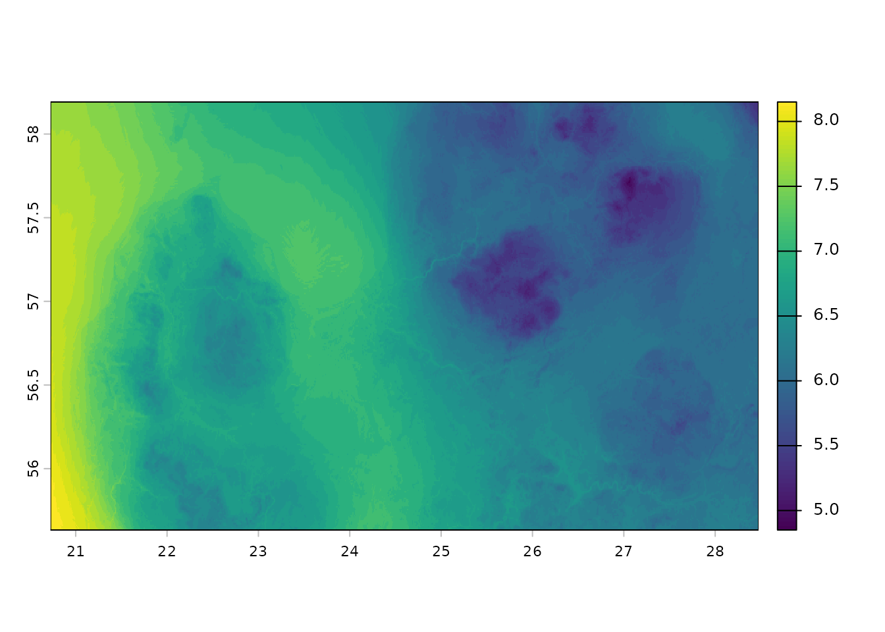
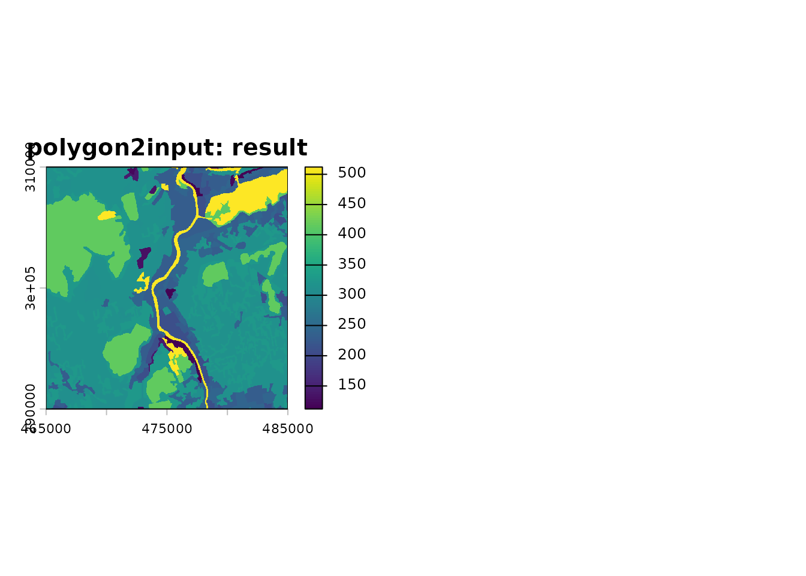
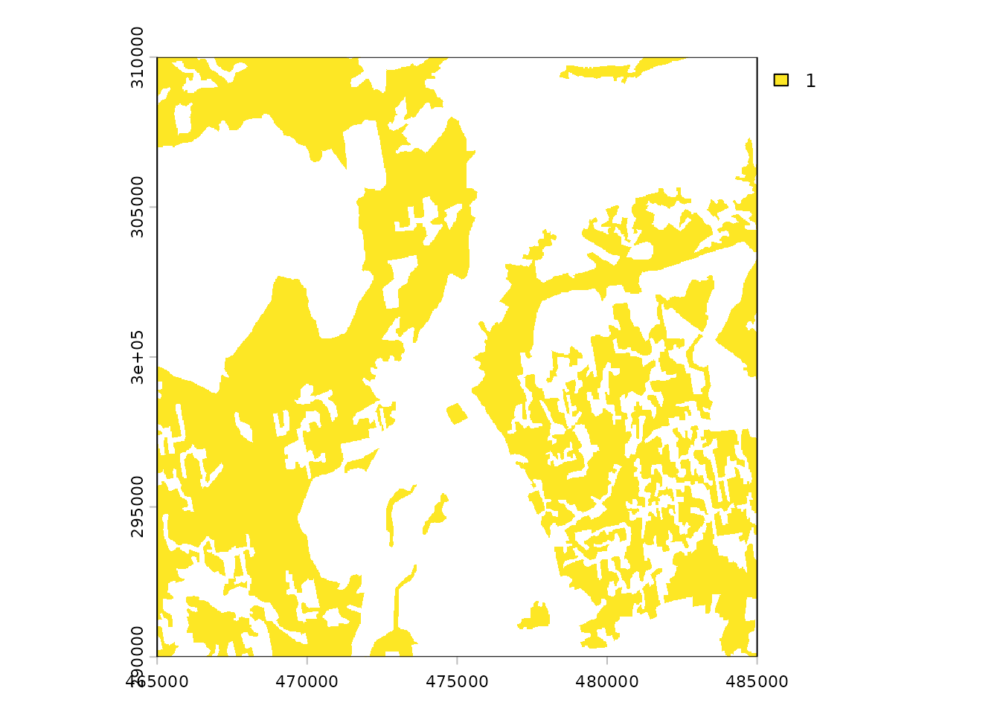
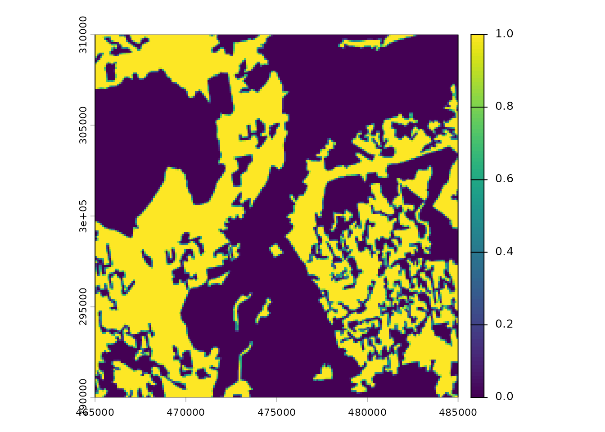
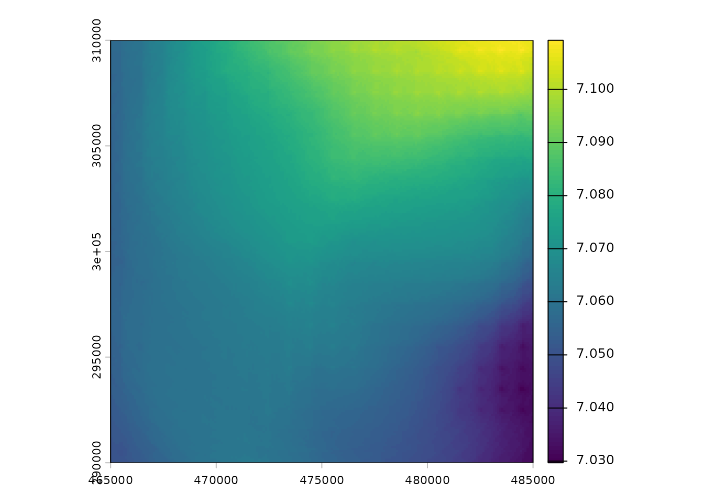
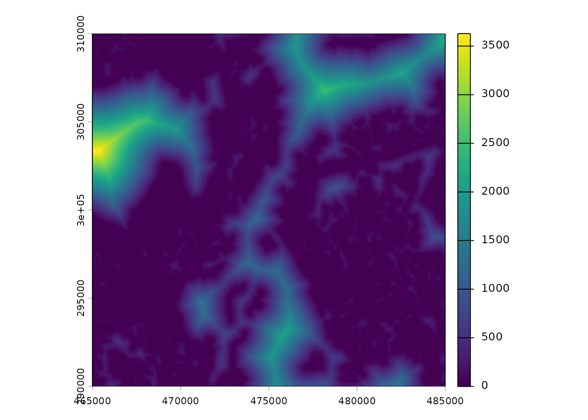
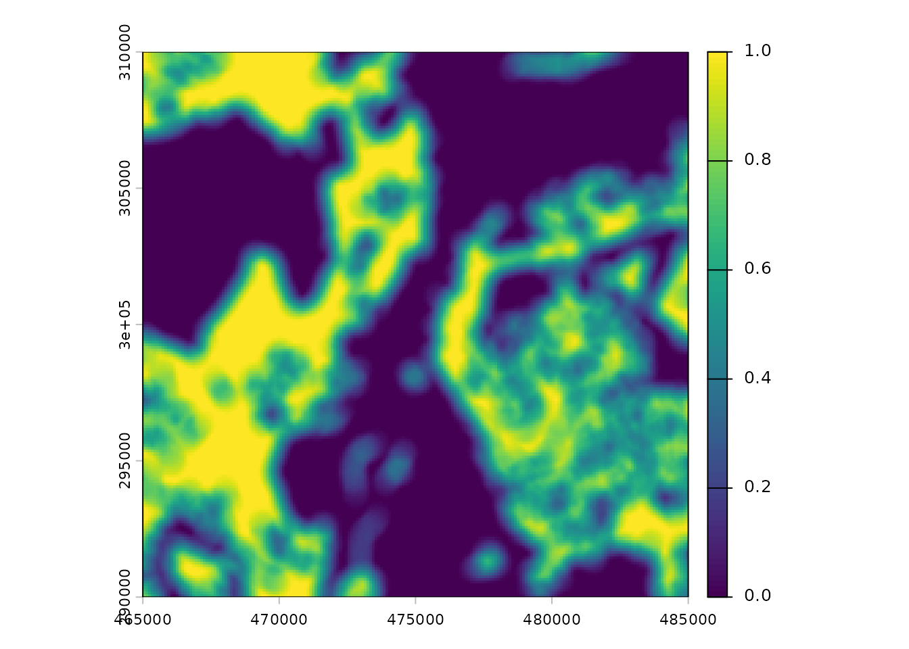
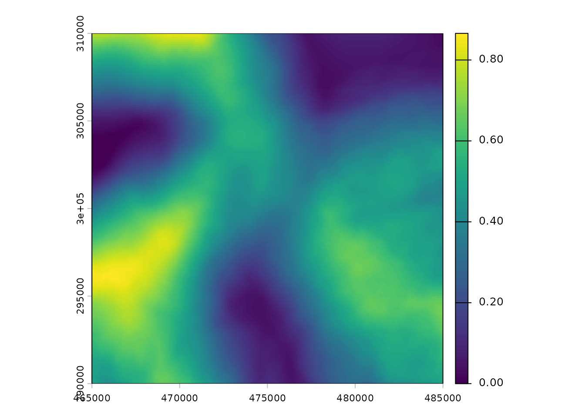
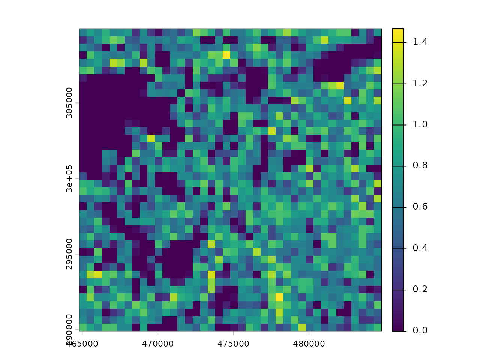
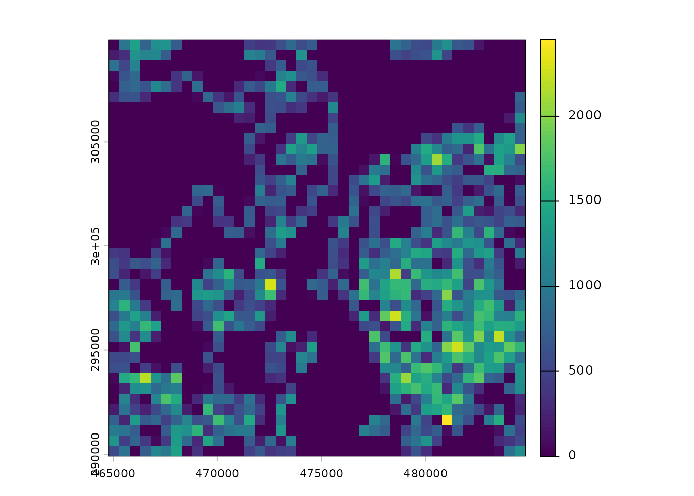

Overview
egvtools provides tools for reproducible preparation of
high-resolution ecogeographical variables (EGVs) from heterogeneous
spatial data. The package is primarily intended for ecological
applications in which environmental information from multiple sources
must be transformed into spatially aligned, analysis-ready raster
layers, for example as predictors in species distribution models
(SDMs).
The package was developed within the project HiQBioDiv: High-resolution quantification of biodiversity for conservation and management, funded by the Latvian Council of Science (Ref. No. VPP-VARAM-DABA-2024/1-0002).
The development version can be installed from GitHub with:
# install.packages("remotes")
remotes::install_github("aavotins/egvtools")Species distribution models relate observations of species occurrence or abundance to environmental conditions and are widely used to describe species-environment relationships and predict distributions across space and time (Elith and Leathwick 2009). Consequently, the quality, ecological relevance, spatial resolution, and spatial scale of environmental predictors are important parts of the modelling workflow.
The main purpose of egvtools is not to replace
general-purpose spatial software. Instead, it provides wrappers and
utilities for recurring operations in large EGV-production workflows,
including rasterization, grid harmonization, aggregation, distance
calculations, multi-scale summaries, landscape metrics, and preparation
of reusable spatial templates. The package builds on established R
spatial infrastructure, particularly terra,
sf, sfarrow, exactextractr,
landscapemetrics, and whitebox (Pebesma 2018; Hesselbarth et al. 2019; Lindsay 2016).
A particular emphasis is placed on reproducibility. Raster origin, resolution, extent, coordinate reference system (CRS), grid-cell locations, and naming conventions are kept consistent across processing steps. This is especially important when large collections of predictors are produced independently and later combined into a common modelling dataset.
The workflow implemented in egvtools builds on previous
work developing multi-scale EGVs for species distribution modelling in
Latvia (Avotins et al.
2022). Although the examples in this vignette use Latvian
template grids, the underlying functions can also be applied to other
study areas when suitable reference grids and raster templates are
provided.
Spatial data processing terminology varies among disciplines and
projects. For clarity, egvtools uses the following
operational terms throughout its documentation. These describe stages of
the EGV-production workflow rather than formal or universal GIS data
categories.
Raw geodata are source data obtained to describe environmental conditions. They may be tables containing coordinates, raster datasets, or vector datasets such as points, lines, and polygons. Raw geodata may already have undergone basic preprocessing by the data provider, but they have not yet been harmonized specifically for the EGV workflow.
Geodata products are intermediate datasets derived from one or more raw geodata sources through substantial spatial processing. Such processing may include overlays, reclassification, prioritization among overlapping datasets, or combination of several data sources. In the workflows described here, geodata products are commonly raster layers with a defined CRS, resolution, origin, and cell alignment.
Creating a geodata product can be important when overlapping source datasets require explicit decisions about which spatial class takes precedence. For example, a high-resolution raster cell cannot simultaneously represent both open water and forest when a subsequent analysis requires an unambiguous forest-water boundary.
Input data or input layers are high-resolution raster layers used directly to calculate EGVs. Their spatial resolution is commonly finer than the final EGV resolution. Working with harmonized raster inputs makes many repeated operations considerably simpler and faster because decisions about projection, alignment, overlaps, and class precedence have already been resolved.
Ecogeographical variables (EGVs) are the analysis-ready environmental variables produced by the workflow. They describe environmental conditions, landscape composition, configuration, distance, diversity, or related characteristics on a common spatial grid. EGVs can consequently be combined directly with occurrence or other ecological data in statistical analyses, including species distribution models. Multi-scale EGVs can additionally represent environmental characteristics surrounding a focal grid cell at several spatial scales (Avotins et al. 2022; Bradter et al. 2013).
In simplified form, the workflow can therefore be represented as:
raw geodata -> geodata products -> harmonized input layers -> EGVs
Not every dataset must pass through every stage. For example, a continuous climate raster may be converted directly from raw geodata to an EGV, whereas several overlapping land-cover datasets may first need to be combined into a geodata product.
In this example we will use following packages:
Example data
Several small example datasets are included with
egvtools. They are intended to demonstrate the workflow
without requiring the use of full national datasets.
The examples below use harmonized raster and vector grids, grid centroids, climate data, and Land Use Land Cover (LULC) information represented by (CORINE Land Cover 2018)[https://land.copernicus.eu/en/products/corine-land-cover/clc2018].
CORINE Land Cover provides a harmonized European land-cover
classification and is used here as a readily interpretable categorical
landscape dataset. The example data are intended to demonstrate
egvtools; users should select source datasets with spatial
and thematic resolution appropriate to their own ecological
questions.
data("clc18", package = "egvtools")Raster example data distributed with the package are stored in
inst/extdata and can be accessed using
system.file().
climate_file <- system.file("extdata",
"Climate.tif",
package = "egvtools")
climate=terra::rast(climate_file)
terra::plot(climate)
The example data distributed with the package are deliberately small. The full harmonization templates used for national processing can instead be downloaded from Zenodo:
(vector data)[https://doi.org/10.5281/zenodo.14237929];
(raster data)[https://doi.org/10.5281/zenodo.14494873].
These templates define the spatial reference used throughout the workflow, including CRS, raster origin, resolution, cell alignment, and identifiers used for tiled processing.
pkg_extdata <- system.file(
"extdata",
package = "egvtools"
)
grid_path100 <- file.path(
pkg_extdata,
"Templates",
"TemplateGrids",
"tikls100_sauzeme.parquet"
)
grid_path500 <- file.path(
pkg_extdata,
"Templates",
"TemplateGrids",
"tikls500_sauzeme.parquet"
)
template_path100 <- file.path(
pkg_extdata,
"Templates",
"TemplateRasters",
"LV100m_10km.tif"
)
template_path10 <- file.path(
pkg_extdata,
"Templates",
"TemplateRasters",
"LV10m_10km.tif"
)
template_path500 <- file.path(
pkg_extdata,
"Templates",
"TemplateRasters",
"LV500m_10km.tif"
)
work_dir <- file.path(tempdir(), "egvtools_vignette")
dir.create(work_dir, recursive = TRUE, showWarnings = FALSE)Reproducibility functions
Large spatial workflows are vulnerable to subtle inconsistencies among datasets. Two rasters may have the same nominal resolution and CRS while still having different origins or cell boundaries, making direct cell-by-cell operations inappropriate.
For this reason, egvtools uses reusable vector and
raster templates to define the geometry of an analysis. The template
download functions provide a convenient way to recreate the same spatial
framework on another computer or in a new project directory.
Downloading vector templates
download_vector_templates() downloads the reference
grids and point layers used for tiled and multi-scale calculations.
download_vector_templates(url="https://zenodo.org/api/records/22912421/files-archive",
grid_dir = "../Templates/TemplateGrids",
points_dir = "../Templates/TemplateGridPoints",
gpkg_dir = "../Templates",
overwrite = TRUE,
quiet = FALSE)Downloading raster templates
download_raster_templates() retrieves the corresponding
raster templates. Together, the vector and raster templates allow
independently generated EGVs to retain exactly the same spatial
geometry.
download_raster_templates(url="https://zenodo.org/api/records/22912630/files-archive",
out_dir = "../Templates/TemplateRasters",
overwrite = TRUE,
quiet = FALSE)Preparing for core workflows
National-scale processing can involve millions of grid cells and very
large input datasets. egvtools therefore supports dividing
calculations into spatial tiles and reassembling the results
afterwards.
Tiling reference grids
tile_vector_grid() divides a reference grid according to
an existing tile identifier. This allows subsequent calculations to
operate on manageable subsets instead of repeatedly loading the complete
national grid.
In egvtools we use GeoParquet for its speed
and memory efficiency. However, it is not yet a stable geodata format,
therefore warnings are expected. So far we have had no issues with this,
but caution is suggested - for long-term preservance of geodata, we
suggest them to be stored in GeoPackage.
tiles_grid <- file.path(
work_dir,
"TemplateGrids",
"tiles"
)
dir.create(
tiles_grid,
recursive = TRUE,
showWarnings = FALSE
)
tile_vector_grid(
grid_path = grid_path100,
out_dir = tiles_grid,
tile_field = "tks50km",
overwrite = TRUE,
quiet = FALSE)
#> Spherical geometry (s2) switched off
#> Tiling by ' tks50km ' with 4 tiles.
#> Warning: This is an initial implementation of Parquet/Feather file support and
#> geo metadata. This is tracking version 0.1.0 of the metadata
#> (https://github.com/geopandas/geo-arrow-spec). This metadata
#> specification may change and does not yet make stability promises. We
#> do not yet recommend using this in a production setting unless you are
#> able to rewrite your Parquet/Feather files.
#> Wrote: tikls100_3243.parquet ( 10100 rows)
#> Warning: This is an initial implementation of Parquet/Feather file support and
#> geo metadata. This is tracking version 0.1.0 of the metadata
#> (https://github.com/geopandas/geo-arrow-spec). This metadata
#> specification may change and does not yet make stability promises. We
#> do not yet recommend using this in a production setting unless you are
#> able to rewrite your Parquet/Feather files.
#> Wrote: tikls100_3244.parquet ( 10302 rows)
#> Warning: This is an initial implementation of Parquet/Feather file support and
#> geo metadata. This is tracking version 0.1.0 of the metadata
#> (https://github.com/geopandas/geo-arrow-spec). This metadata
#> specification may change and does not yet make stability promises. We
#> do not yet recommend using this in a production setting unless you are
#> able to rewrite your Parquet/Feather files.
#> Wrote: tikls100_4221.parquet ( 10100 rows)
#> Warning: This is an initial implementation of Parquet/Feather file support and
#> geo metadata. This is tracking version 0.1.0 of the metadata
#> (https://github.com/geopandas/geo-arrow-spec). This metadata
#> specification may change and does not yet make stability promises. We
#> do not yet recommend using this in a production setting unless you are
#> able to rewrite your Parquet/Feather files.
#> Wrote: tikls100_4222.parquet ( 10302 rows)Preparing multi-scale buffers
Ecological relationships are frequently scale-dependent. Environmental conditions immediately surrounding an observation may describe local habitat, whereas conditions measured over larger neighbourhoods can describe landscape composition, habitat availability, fragmentation, or broader ecological processes. Evaluating predictors at more than one spatial scale can therefore be important in species distribution modelling (Bradter et al. 2013).
tiled_buffers() prepares reusable buffer geometries
around grid-cell centroids. Because these geometries are created once
and subsequently reused for many input variables, this can substantially
reduce duplicated spatial processing. The following example prepares
polygons with radii 500 m and 3000 m around the centroid of every 100 m
grid cell.
in_dir <- system.file(
"extdata",
"Templates",
"TemplateGridPoints",
package = "egvtools"
)
out_path_buff <- file.path(
work_dir,
"TemplateGridPoints",
"tiles"
)
dir.create(
out_path_buff,
recursive = TRUE,
showWarnings = FALSE
)
tiled_buffers(
in_dir = in_dir,
out_dir = out_path_buff,
buffer_mode = "dense",
radii_dense = c(500, 3000),
split_field = "tks50km",
n_workers = 2,
future_max_mem_gb = 4,
overwrite = TRUE,
quiet = FALSE
)
#> Spherical geometry (s2) switched off
#> Warning: This is an initial implementation of Parquet/Feather file support and
#> geo metadata. This is tracking version 0.1.0 of the metadata
#> (https://github.com/geopandas/geo-arrow-spec). This metadata
#> specification may change and does not yet make stability promises. We
#> do not yet recommend using this in a production setting unless you are
#> able to rewrite your Parquet/Feather files.
#> Warning: This is an initial implementation of Parquet/Feather file support and
#> geo metadata. This is tracking version 0.1.0 of the metadata
#> (https://github.com/geopandas/geo-arrow-spec). This metadata
#> specification may change and does not yet make stability promises. We
#> do not yet recommend using this in a production setting unless you are
#> able to rewrite your Parquet/Feather files.
#> Warning: This is an initial implementation of Parquet/Feather file support and
#> geo metadata. This is tracking version 0.1.0 of the metadata
#> (https://github.com/geopandas/geo-arrow-spec). This metadata
#> specification may change and does not yet make stability promises. We
#> do not yet recommend using this in a production setting unless you are
#> able to rewrite your Parquet/Feather files.
#> Warning: This is an initial implementation of Parquet/Feather file support and
#> geo metadata. This is tracking version 0.1.0 of the metadata
#> (https://github.com/geopandas/geo-arrow-spec). This metadata
#> specification may change and does not yet make stability promises. We
#> do not yet recommend using this in a production setting unless you are
#> able to rewrite your Parquet/Feather files.
#> Spherical geometry (s2) switched off
#> Warning: This is an initial implementation of Parquet/Feather file support and
#> geo metadata. This is tracking version 0.1.0 of the metadata
#> (https://github.com/geopandas/geo-arrow-spec). This metadata
#> specification may change and does not yet make stability promises. We
#> do not yet recommend using this in a production setting unless you are
#> able to rewrite your Parquet/Feather files.
#> Warning: This is an initial implementation of Parquet/Feather file support and
#> geo metadata. This is tracking version 0.1.0 of the metadata
#> (https://github.com/geopandas/geo-arrow-spec). This metadata
#> specification may change and does not yet make stability promises. We
#> do not yet recommend using this in a production setting unless you are
#> able to rewrite your Parquet/Feather files.
#> Warning: This is an initial implementation of Parquet/Feather file support and
#> geo metadata. This is tracking version 0.1.0 of the metadata
#> (https://github.com/geopandas/geo-arrow-spec). This metadata
#> specification may change and does not yet make stability promises. We
#> do not yet recommend using this in a production setting unless you are
#> able to rewrite your Parquet/Feather files.
#> Warning: This is an initial implementation of Parquet/Feather file support and
#> geo metadata. This is tracking version 0.1.0 of the metadata
#> (https://github.com/geopandas/geo-arrow-spec). This metadata
#> specification may change and does not yet make stability promises. We
#> do not yet recommend using this in a production setting unless you are
#> able to rewrite your Parquet/Feather files.
#> tiled_buffers complete. Wrote 8 / 8 files at /tmp/Rtmp0F5d78/egvtools_vignette/TemplateGridPoints/tilesWith buffer_mode = "dense", buffers are created around
the full set of reference points for each requested radius. The
appropriate radii should be chosen according to the ecological processes
and taxa being studied rather than interpreted as universally applicable
spatial scales. buffer_mode = "sparse" prepares sparser
buffers (500 m and 1250 m around the centroid of every 100 m grid cell,
3000 m around the centroid of every 300 m grid cell and 10000 m around
the centroid of every 1 km grid cell) to reproduce workflow used in
project HiQBioDiv. And the buffer_mode = "specified" can be
used for user specified relation between grids, centroids and buffers
(see ?egvtools::tiled_buffers for example).
Creating background rasters
Some transformations require an explicit value outside the features
represented by an input layer. For example, a binary habitat layer may
contain 1 for the target habitat and NA
elsewhere, while an aggregation operation requires non-target area to be
represented by 0.
create_backgrounds() creates raster backgrounds aligned
with the reference templates. These can subsequently be used to
distinguish true zero values from missing data.
in_dir <- system.file(
"extdata",
"Templates",
"TemplateRasters",
package = "egvtools"
)
out_path <- file.path(
work_dir,
"TemplateRasters"
)
dir.create(
out_path,
recursive = TRUE,
showWarnings = FALSE
)
create_backgrounds(
in_dir = in_dir,
out_dir = out_path,
background_value = 0,
out_prefix="nulls_",
overwrite = TRUE,
terra_todisk = TRUE
)
#> Found 3 raster(s). Writing to: /tmp/Rtmp0F5d78/egvtools_vignette/TemplateRasters
#> [1/3] Processing: LV100m_10km.tif
#> -> Wrote: /tmp/Rtmp0F5d78/egvtools_vignette/TemplateRasters/nulls_LV100m_10km.tif
#> [2/3] Processing: LV10m_10km.tif
#> -> Wrote: /tmp/Rtmp0F5d78/egvtools_vignette/TemplateRasters/nulls_LV10m_10km.tif
#> [3/3] Processing: LV500m_10km.tif
#> -> Wrote: /tmp/Rtmp0F5d78/egvtools_vignette/TemplateRasters/nulls_LV500m_10km.tif
#> Done. Total elapsed: 0.6 secCore analysis functionality
The core functions in egvtools implement several common
transformations from source spatial information to analysis-ready EGVs.
The examples below illustrate a typical sequence rather than a mandatory
pipeline. Individual functions can also be used independently.
Polygons to harmonized inputs
Many environmental datasets are supplied as polygons, whereas repeated high-resolution calculations are often more efficient once the information has been converted to a common raster grid.
polygon2input() rasterizes vector features using an
existing raster template. The template determines the CRS, resolution,
extent, origin, and cell locations, ensuring that the resulting input
raster is compatible with other layers in the workflow.
clc18$code=as.numeric(clc18$code_18)
polygon2input(vector_data = clc18,
template_path = template_path10,
out_path = work_dir,
file_name = "clc_classes.tif",
value_field = "code",
plot_result = TRUE,
plot_gaps = TRUE,
overwrite = TRUE)
#> Rasterizing polygons (fasterize) ...
#> Projection skipped (grids already aligned).
#> Missing cells before restrict/cover: 0
#> Missing cells after all processing: 0
#> Wrote: /tmp/Rtmp0F5d78/egvtools_vignette/clc_classes.tifHere, CLC polygons are converted to a categorical raster at the resolution of the high-resolution input template. The resulting raster is an intermediate input layer rather than the final EGV.
Where several vector datasets overlap, class precedence should preferably be resolved before or during this step. This ensures that subsequent landscape boundaries represent ecological classes rather than inconsistencies among source datasets.
Inputs to harmonized EGVs
A common EGV is the proportion of a focal land-cover class within each analysis cell. This can be calculated from a high-resolution binary input raster by aggregating fine-resolution cells to the EGV grid.
classes <- file.path(
work_dir,
"clc_classes.tif"
)
clc_rast=terra::rast(classes)
forests=ifel(clc_rast>310&clc_rast<320,1,NA)
terra::plot(forests)
In this example, forest cells are selected from the categorical CLC raster.
input2egv(input=forests,
egv_template = template_path100,
summary_function = "average",
missing_job = "CoverInput",
input_bg = 0,
input_template = template_path10,
check_alignment = TRUE,
outlocation = work_dir,
outfilename="Forest_prop.tif",
layername="Forest_prop",
plot_gaps = FALSE,
plot_final = FALSE
)
terra::plot(terra::rast(file.path(work_dir,"/Forest_prop.tif")))
input2egv() summarizes the high-resolution input within
cells of the EGV template. With
summary_function = "average" and a binary input consisting
of 1 for forest and 0 for non-forest, the
resulting value represents the proportion of each EGV cell occupied by
forest.
The explicit background raster is important here because
NA and zero have different meanings: NA
indicates unavailable information, whereas zero represents a valid
observation of no forest cover.
Harmonizing coarse-resolution rasters
Not all environmental data originate at a finer resolution than the target EGV grid. Climate and other continuous environmental datasets are frequently available on substantially coarser grids.
downscale2egv() provides a standardized workflow for
transferring such continuous data to the EGV template, with optional gap
filling and spatial smoothing.
df <- downscale2egv(
template_path = template_path100,
grid_path = grid_path100,
rawfile_path = climate_file,
out_path = work_dir,
file_name = "climate_egv.tif",
layer_name = "climate",
fill_gaps = TRUE,
smooth = TRUE,
smooth_radius_km = 10,
plot_result = FALSE
)
#> Projecting (bilinear) and masking to template ...
#> No gaps detected; skipping gap filling.
#> Wrote: /tmp/Rtmp0F5d78/egvtools_vignette/climate_egv.tif
print(df)
#> output gap_count max_gap_distance
#> 1 /tmp/Rtmp0F5d78/egvtools_vignette/climate_egv.tif 0 NA
#> filter_size_cells smoothed smoothing_radius_used elapsed_sec
#> 1 NA TRUE 10000 1.452248
terra::plot(terra::rast(file.path(work_dir,"/climate_egv.tif")))
The term downscaling here refers to producing a raster on the finer EGV grid; it should not be interpreted as creating new independent environmental information at that finer resolution. The effective information content remains constrained by the resolution and methodology of the original dataset. This distinction is particularly important when fine-resolution EGVs are subsequently used in statistical models.
Distance to an environmental feature
Distance variables provide another way to describe landscape structure. Rather than measuring the amount of a land-cover class within a cell, they quantify the spatial separation between locations and selected environmental features.
distance2egv(
input = clc_rast,
template_egv = template_path100,
values_as_one = c("(310,320)"),
outlocation = work_dir,
outfilename = "dist_forest.tif",
layername = "dist_forest",
use_whitebox = TRUE,
plot_result = FALSE,
plot_gaps = FALSE,
terra_todisk = TRUE
)
#> Computing distance with WhiteboxTools ...
#> Align: aggregate (mean) by 10x10x, then resample (near).
terra::plot(terra::rast(file.path(work_dir,"/dist_forest.tif")))
In this example, cells representing forest are treated as the target object and the output gives the distance to forest on the EGV grid. Such variables can be useful when ecological responses are associated with proximity to habitat, water, settlements, roads, or other spatial features.
When requested, distance2egv() can use WhiteboxTools as
the computational backend for distance calculations (Lindsay
2016).
Multi-scale zonal statistics
The value of an environmental predictor may depend on the spatial neighbourhood over which it is measured. A local forest-cover value, for example, describes conditions at the focal location, whereas forest cover within 500 m or 3000 m describes increasingly broad landscape contexts. Species can respond to environmental characteristics at several such scales (Bradter et al. 2013).
generalized_radius_function() calculates summaries of
one or more raster layers within previously generated buffers and
returns the results to the common EGV grid.
generalized_radius_function(
kvadrati_path = tiles_grid,
radii_path = out_path_buff,
radii=c(500,3000),
reference_grid_path = grid_path100,
template_path = template_path100,
input_layers = c(forests = file.path(work_dir,"/Forest_prop.tif")),
output_dir = work_dir,
layer_prefixes = c("ForestProp"),
buffer_mode = "dense",
n_workers = 2
)
#> Processing tile: 3243
#> | | | 0% | | | 1% | |= | 1% | |= | 2% | |== | 2% | |== | 3% | |== | 4% | |=== | 4% | |=== | 5% | |==== | 5% | |==== | 6% | |===== | 6% | |===== | 7% | |===== | 8% | |====== | 8% | |====== | 9% | |======= | 9% | |======= | 10% | |======= | 11% | |======== | 11% | |======== | 12% | |========= | 12% | |========= | 13% | |========= | 14% | |========== | 14% | |========== | 15% | |=========== | 15% | |=========== | 16% | |============ | 16% | |============ | 17% | |============ | 18% | |============= | 18% | |============= | 19% | |============== | 19% | |============== | 20% | |============== | 21% | |=============== | 21% | |=============== | 22% | |================ | 22% | |================ | 23% | |================ | 24% | |================= | 24% | |================= | 25% | |================== | 25% | |================== | 26% | |=================== | 26% | |=================== | 27% | |=================== | 28% | |==================== | 28% | |==================== | 29% | |===================== | 29% | |===================== | 30% | |===================== | 31% | |====================== | 31% | |====================== | 32% | |======================= | 32% | |======================= | 33% | |======================= | 34% | |======================== | 34% | |======================== | 35% | |========================= | 35% | |========================= | 36% | |========================== | 36% | |========================== | 37% | |========================== | 38% | |=========================== | 38% | |=========================== | 39% | |============================ | 39% | |============================ | 40% | |============================ | 41% | |============================= | 41% | |============================= | 42% | |============================== | 42% | |============================== | 43% | |============================== | 44% | |=============================== | 44% | |=============================== | 45% | |================================ | 45% | |================================ | 46% | |================================= | 46% | |================================= | 47% | |================================= | 48% | |================================== | 48% | |================================== | 49% | |=================================== | 49% | |=================================== | 50% | |=================================== | 51% | |==================================== | 51% | |==================================== | 52% | |===================================== | 52% | |===================================== | 53% | |===================================== | 54% | |====================================== | 54% | |====================================== | 55% | |======================================= | 55% | |======================================= | 56% | |======================================== | 56% | |======================================== | 57% | |======================================== | 58% | |========================================= | 58% | |========================================= | 59% | |========================================== | 59% | |========================================== | 60% | |========================================== | 61% | |=========================================== | 61% | |=========================================== | 62% | |============================================ | 62% | |============================================ | 63% | |============================================ | 64% | |============================================= | 64% | |============================================= | 65% | |============================================== | 65% | |============================================== | 66% | |=============================================== | 66% | |=============================================== | 67% | |=============================================== | 68% | |================================================ | 68% | |================================================ | 69% | |================================================= | 69% | |================================================= | 70% | |================================================= | 71% | |================================================== | 71% | |================================================== | 72% | |=================================================== | 72% | |=================================================== | 73% | |=================================================== | 74% | |==================================================== | 74% | |==================================================== | 75% | |===================================================== | 75% | |===================================================== | 76% | |====================================================== | 76% | |====================================================== | 77% | |====================================================== | 78% | |======================================================= | 78% | |======================================================= | 79% | |======================================================== | 79% | |======================================================== | 80% | |======================================================== | 81% | |========================================================= | 81% | |========================================================= | 82% | |========================================================== | 82% | |========================================================== | 83% | |========================================================== | 84% | |=========================================================== | 84% | |=========================================================== | 85% | |============================================================ | 85% | |============================================================ | 86% | |============================================================= | 86% | |============================================================= | 87% | |============================================================= | 88% | |============================================================== | 88% | |============================================================== | 89% | |=============================================================== | 89% | |=============================================================== | 90% | |=============================================================== | 91% | |================================================================ | 91% | |================================================================ | 92% | |================================================================= | 92% | |================================================================= | 93% | |================================================================= | 94% | |================================================================== | 94% | |================================================================== | 95% | |=================================================================== | 95% | |=================================================================== | 96% | |==================================================================== | 96% | |==================================================================== | 97% | |==================================================================== | 98% | |===================================================================== | 98% | |===================================================================== | 99% | |======================================================================| 99% | |======================================================================| 100%
#> | | | 0% | | | 1% | |= | 1% | |= | 2% | |== | 2% | |== | 3% | |== | 4% | |=== | 4% | |=== | 5% | |==== | 5% | |==== | 6% | |===== | 6% | |===== | 7% | |===== | 8% | |====== | 8% | |====== | 9% | |======= | 9% | |======= | 10% | |======= | 11% | |======== | 11% | |======== | 12% | |========= | 12% | |========= | 13% | |========= | 14% | |========== | 14% | |========== | 15% | |=========== | 15% | |=========== | 16% | |============ | 16% | |============ | 17% | |============ | 18% | |============= | 18% | |============= | 19% | |============== | 19% | |============== | 20% | |============== | 21% | |=============== | 21% | |=============== | 22% | |================ | 22% | |================ | 23% | |================ | 24% | |================= | 24% | |================= | 25% | |================== | 25% | |================== | 26% | |=================== | 26% | |=================== | 27% | |=================== | 28% | |==================== | 28% | |==================== | 29% | |===================== | 29% | |===================== | 30% | |===================== | 31% | |====================== | 31% | |====================== | 32% | |======================= | 32% | |======================= | 33% | |======================= | 34% | |======================== | 34% | |======================== | 35% | |========================= | 35% | |========================= | 36% | |========================== | 36% | |========================== | 37% | |========================== | 38% | |=========================== | 38% | |=========================== | 39% | |============================ | 39% | |============================ | 40% | |============================ | 41% | |============================= | 41% | |============================= | 42% | |============================== | 42% | |============================== | 43% | |============================== | 44% | |=============================== | 44% | |=============================== | 45% | |================================ | 45% | |================================ | 46% | |================================= | 46% | |================================= | 47% | |================================= | 48% | |================================== | 48% | |================================== | 49% | |=================================== | 49% | |=================================== | 50% | |=================================== | 51% | |==================================== | 51% | |==================================== | 52% | |===================================== | 52% | |===================================== | 53% | |===================================== | 54% | |====================================== | 54% | |====================================== | 55% | |======================================= | 55% | |======================================= | 56% | |======================================== | 56% | |======================================== | 57% | |======================================== | 58% | |========================================= | 58% | |========================================= | 59% | |========================================== | 59% | |========================================== | 60% | |========================================== | 61% | |=========================================== | 61% | |=========================================== | 62% | |============================================ | 62% | |============================================ | 63% | |============================================ | 64% | |============================================= | 64% | |============================================= | 65% | |============================================== | 65% | |============================================== | 66% | |=============================================== | 66% | |=============================================== | 67% | |=============================================== | 68% | |================================================ | 68% | |================================================ | 69% | |================================================= | 69% | |================================================= | 70% | |================================================= | 71% | |================================================== | 71% | |================================================== | 72% | |=================================================== | 72% | |=================================================== | 73% | |=================================================== | 74% | |==================================================== | 74% | |==================================================== | 75% | |===================================================== | 75% | |===================================================== | 76% | |====================================================== | 76% | |====================================================== | 77% | |====================================================== | 78% | |======================================================= | 78% | |======================================================= | 79% | |======================================================== | 79% | |======================================================== | 80% | |======================================================== | 81% | |========================================================= | 81% | |========================================================= | 82% | |========================================================== | 82% | |========================================================== | 83% | |========================================================== | 84% | |=========================================================== | 84% | |=========================================================== | 85% | |============================================================ | 85% | |============================================================ | 86% | |============================================================= | 86% | |============================================================= | 87% | |============================================================= | 88% | |============================================================== | 88% | |============================================================== | 89% | |=============================================================== | 89% | |=============================================================== | 90% | |=============================================================== | 91% | |================================================================ | 91% | |================================================================ | 92% | |================================================================= | 92% | |================================================================= | 93% | |================================================================= | 94% | |================================================================== | 94% | |================================================================== | 95% | |=================================================================== | 95% | |=================================================================== | 96% | |==================================================================== | 96% | |==================================================================== | 97% | |==================================================================== | 98% | |===================================================================== | 98% | |===================================================================== | 99% | |======================================================================| 99% | |======================================================================| 100%
#> Processing tile: 3244
#> | | | 0% | | | 1% | |= | 1% | |= | 2% | |== | 2% | |== | 3% | |== | 4% | |=== | 4% | |=== | 5% | |==== | 5% | |==== | 6% | |===== | 6% | |===== | 7% | |===== | 8% | |====== | 8% | |====== | 9% | |======= | 9% | |======= | 10% | |======= | 11% | |======== | 11% | |======== | 12% | |========= | 12% | |========= | 13% | |========= | 14% | |========== | 14% | |========== | 15% | |=========== | 15% | |=========== | 16% | |============ | 16% | |============ | 17% | |============ | 18% | |============= | 18% | |============= | 19% | |============== | 19% | |============== | 20% | |============== | 21% | |=============== | 21% | |=============== | 22% | |================ | 22% | |================ | 23% | |================ | 24% | |================= | 24% | |================= | 25% | |================== | 25% | |================== | 26% | |=================== | 26% | |=================== | 27% | |=================== | 28% | |==================== | 28% | |==================== | 29% | |===================== | 29% | |===================== | 30% | |===================== | 31% | |====================== | 31% | |====================== | 32% | |======================= | 32% | |======================= | 33% | |======================= | 34% | |======================== | 34% | |======================== | 35% | |========================= | 35% | |========================= | 36% | |========================== | 36% | |========================== | 37% | |========================== | 38% | |=========================== | 38% | |=========================== | 39% | |============================ | 39% | |============================ | 40% | |============================ | 41% | |============================= | 41% | |============================= | 42% | |============================== | 42% | |============================== | 43% | |============================== | 44% | |=============================== | 44% | |=============================== | 45% | |================================ | 45% | |================================ | 46% | |================================= | 46% | |================================= | 47% | |================================= | 48% | |================================== | 48% | |================================== | 49% | |=================================== | 49% | |=================================== | 50% | |=================================== | 51% | |==================================== | 51% | |==================================== | 52% | |===================================== | 52% | |===================================== | 53% | |===================================== | 54% | |====================================== | 54% | |====================================== | 55% | |======================================= | 55% | |======================================= | 56% | |======================================== | 56% | |======================================== | 57% | |======================================== | 58% | |========================================= | 58% | |========================================= | 59% | |========================================== | 59% | |========================================== | 60% | |========================================== | 61% | |=========================================== | 61% | |=========================================== | 62% | |============================================ | 62% | |============================================ | 63% | |============================================ | 64% | |============================================= | 64% | |============================================= | 65% | |============================================== | 65% | |============================================== | 66% | |=============================================== | 66% | |=============================================== | 67% | |=============================================== | 68% | |================================================ | 68% | |================================================ | 69% | |================================================= | 69% | |================================================= | 70% | |================================================= | 71% | |================================================== | 71% | |================================================== | 72% | |=================================================== | 72% | |=================================================== | 73% | |=================================================== | 74% | |==================================================== | 74% | |==================================================== | 75% | |===================================================== | 75% | |===================================================== | 76% | |====================================================== | 76% | |====================================================== | 77% | |====================================================== | 78% | |======================================================= | 78% | |======================================================= | 79% | |======================================================== | 79% | |======================================================== | 80% | |======================================================== | 81% | |========================================================= | 81% | |========================================================= | 82% | |========================================================== | 82% | |========================================================== | 83% | |========================================================== | 84% | |=========================================================== | 84% | |=========================================================== | 85% | |============================================================ | 85% | |============================================================ | 86% | |============================================================= | 86% | |============================================================= | 87% | |============================================================= | 88% | |============================================================== | 88% | |============================================================== | 89% | |=============================================================== | 89% | |=============================================================== | 90% | |=============================================================== | 91% | |================================================================ | 91% | |================================================================ | 92% | |================================================================= | 92% | |================================================================= | 93% | |================================================================= | 94% | |================================================================== | 94% | |================================================================== | 95% | |=================================================================== | 95% | |=================================================================== | 96% | |==================================================================== | 96% | |==================================================================== | 97% | |==================================================================== | 98% | |===================================================================== | 98% | |===================================================================== | 99% | |======================================================================| 99% | |======================================================================| 100%
#> | | | 0% | | | 1% | |= | 1% | |= | 2% | |== | 2% | |== | 3% | |== | 4% | |=== | 4% | |=== | 5% | |==== | 5% | |==== | 6% | |===== | 6% | |===== | 7% | |===== | 8% | |====== | 8% | |====== | 9% | |======= | 9% | |======= | 10% | |======= | 11% | |======== | 11% | |======== | 12% | |========= | 12% | |========= | 13% | |========= | 14% | |========== | 14% | |========== | 15% | |=========== | 15% | |=========== | 16% | |============ | 16% | |============ | 17% | |============ | 18% | |============= | 18% | |============= | 19% | |============== | 19% | |============== | 20% | |============== | 21% | |=============== | 21% | |=============== | 22% | |================ | 22% | |================ | 23% | |================ | 24% | |================= | 24% | |================= | 25% | |================== | 25% | |================== | 26% | |=================== | 26% | |=================== | 27% | |=================== | 28% | |==================== | 28% | |==================== | 29% | |===================== | 29% | |===================== | 30% | |===================== | 31% | |====================== | 31% | |====================== | 32% | |======================= | 32% | |======================= | 33% | |======================= | 34% | |======================== | 34% | |======================== | 35% | |========================= | 35% | |========================= | 36% | |========================== | 36% | |========================== | 37% | |========================== | 38% | |=========================== | 38% | |=========================== | 39% | |============================ | 39% | |============================ | 40% | |============================ | 41% | |============================= | 41% | |============================= | 42% | |============================== | 42% | |============================== | 43% | |============================== | 44% | |=============================== | 44% | |=============================== | 45% | |================================ | 45% | |================================ | 46% | |================================= | 46% | |================================= | 47% | |================================= | 48% | |================================== | 48% | |================================== | 49% | |=================================== | 49% | |=================================== | 50% | |=================================== | 51% | |==================================== | 51% | |==================================== | 52% | |===================================== | 52% | |===================================== | 53% | |===================================== | 54% | |====================================== | 54% | |====================================== | 55% | |======================================= | 55% | |======================================= | 56% | |======================================== | 56% | |======================================== | 57% | |======================================== | 58% | |========================================= | 58% | |========================================= | 59% | |========================================== | 59% | |========================================== | 60% | |========================================== | 61% | |=========================================== | 61% | |=========================================== | 62% | |============================================ | 62% | |============================================ | 63% | |============================================ | 64% | |============================================= | 64% | |============================================= | 65% | |============================================== | 65% | |============================================== | 66% | |=============================================== | 66% | |=============================================== | 67% | |=============================================== | 68% | |================================================ | 68% | |================================================ | 69% | |================================================= | 69% | |================================================= | 70% | |================================================= | 71% | |================================================== | 71% | |================================================== | 72% | |=================================================== | 72% | |=================================================== | 73% | |=================================================== | 74% | |==================================================== | 74% | |==================================================== | 75% | |===================================================== | 75% | |===================================================== | 76% | |====================================================== | 76% | |====================================================== | 77% | |====================================================== | 78% | |======================================================= | 78% | |======================================================= | 79% | |======================================================== | 79% | |======================================================== | 80% | |======================================================== | 81% | |========================================================= | 81% | |========================================================= | 82% | |========================================================== | 82% | |========================================================== | 83% | |========================================================== | 84% | |=========================================================== | 84% | |=========================================================== | 85% | |============================================================ | 85% | |============================================================ | 86% | |============================================================= | 86% | |============================================================= | 87% | |============================================================= | 88% | |============================================================== | 88% | |============================================================== | 89% | |=============================================================== | 89% | |=============================================================== | 90% | |=============================================================== | 91% | |================================================================ | 91% | |================================================================ | 92% | |================================================================= | 92% | |================================================================= | 93% | |================================================================= | 94% | |================================================================== | 94% | |================================================================== | 95% | |=================================================================== | 95% | |=================================================================== | 96% | |==================================================================== | 96% | |==================================================================== | 97% | |==================================================================== | 98% | |===================================================================== | 98% | |===================================================================== | 99% | |======================================================================| 99% | |======================================================================| 100%
#> Processing tile: 4221
#> | | | 0% | | | 1% | |= | 1% | |= | 2% | |== | 2% | |== | 3% | |== | 4% | |=== | 4% | |=== | 5% | |==== | 5% | |==== | 6% | |===== | 6% | |===== | 7% | |===== | 8% | |====== | 8% | |====== | 9% | |======= | 9% | |======= | 10% | |======= | 11% | |======== | 11% | |======== | 12% | |========= | 12% | |========= | 13% | |========= | 14% | |========== | 14% | |========== | 15% | |=========== | 15% | |=========== | 16% | |============ | 16% | |============ | 17% | |============ | 18% | |============= | 18% | |============= | 19% | |============== | 19% | |============== | 20% | |============== | 21% | |=============== | 21% | |=============== | 22% | |================ | 22% | |================ | 23% | |================ | 24% | |================= | 24% | |================= | 25% | |================== | 25% | |================== | 26% | |=================== | 26% | |=================== | 27% | |=================== | 28% | |==================== | 28% | |==================== | 29% | |===================== | 29% | |===================== | 30% | |===================== | 31% | |====================== | 31% | |====================== | 32% | |======================= | 32% | |======================= | 33% | |======================= | 34% | |======================== | 34% | |======================== | 35% | |========================= | 35% | |========================= | 36% | |========================== | 36% | |========================== | 37% | |========================== | 38% | |=========================== | 38% | |=========================== | 39% | |============================ | 39% | |============================ | 40% | |============================ | 41% | |============================= | 41% | |============================= | 42% | |============================== | 42% | |============================== | 43% | |============================== | 44% | |=============================== | 44% | |=============================== | 45% | |================================ | 45% | |================================ | 46% | |================================= | 46% | |================================= | 47% | |================================= | 48% | |================================== | 48% | |================================== | 49% | |=================================== | 49% | |=================================== | 50% | |=================================== | 51% | |==================================== | 51% | |==================================== | 52% | |===================================== | 52% | |===================================== | 53% | |===================================== | 54% | |====================================== | 54% | |====================================== | 55% | |======================================= | 55% | |======================================= | 56% | |======================================== | 56% | |======================================== | 57% | |======================================== | 58% | |========================================= | 58% | |========================================= | 59% | |========================================== | 59% | |========================================== | 60% | |========================================== | 61% | |=========================================== | 61% | |=========================================== | 62% | |============================================ | 62% | |============================================ | 63% | |============================================ | 64% | |============================================= | 64% | |============================================= | 65% | |============================================== | 65% | |============================================== | 66% | |=============================================== | 66% | |=============================================== | 67% | |=============================================== | 68% | |================================================ | 68% | |================================================ | 69% | |================================================= | 69% | |================================================= | 70% | |================================================= | 71% | |================================================== | 71% | |================================================== | 72% | |=================================================== | 72% | |=================================================== | 73% | |=================================================== | 74% | |==================================================== | 74% | |==================================================== | 75% | |===================================================== | 75% | |===================================================== | 76% | |====================================================== | 76% | |====================================================== | 77% | |====================================================== | 78% | |======================================================= | 78% | |======================================================= | 79% | |======================================================== | 79% | |======================================================== | 80% | |======================================================== | 81% | |========================================================= | 81% | |========================================================= | 82% | |========================================================== | 82% | |========================================================== | 83% | |========================================================== | 84% | |=========================================================== | 84% | |=========================================================== | 85% | |============================================================ | 85% | |============================================================ | 86% | |============================================================= | 86% | |============================================================= | 87% | |============================================================= | 88% | |============================================================== | 88% | |============================================================== | 89% | |=============================================================== | 89% | |=============================================================== | 90% | |=============================================================== | 91% | |================================================================ | 91% | |================================================================ | 92% | |================================================================= | 92% | |================================================================= | 93% | |================================================================= | 94% | |================================================================== | 94% | |================================================================== | 95% | |=================================================================== | 95% | |=================================================================== | 96% | |==================================================================== | 96% | |==================================================================== | 97% | |==================================================================== | 98% | |===================================================================== | 98% | |===================================================================== | 99% | |======================================================================| 99% | |======================================================================| 100%
#> | | | 0% | | | 1% | |= | 1% | |= | 2% | |== | 2% | |== | 3% | |== | 4% | |=== | 4% | |=== | 5% | |==== | 5% | |==== | 6% | |===== | 6% | |===== | 7% | |===== | 8% | |====== | 8% | |====== | 9% | |======= | 9% | |======= | 10% | |======= | 11% | |======== | 11% | |======== | 12% | |========= | 12% | |========= | 13% | |========= | 14% | |========== | 14% | |========== | 15% | |=========== | 15% | |=========== | 16% | |============ | 16% | |============ | 17% | |============ | 18% | |============= | 18% | |============= | 19% | |============== | 19% | |============== | 20% | |============== | 21% | |=============== | 21% | |=============== | 22% | |================ | 22% | |================ | 23% | |================ | 24% | |================= | 24% | |================= | 25% | |================== | 25% | |================== | 26% | |=================== | 26% | |=================== | 27% | |=================== | 28% | |==================== | 28% | |==================== | 29% | |===================== | 29% | |===================== | 30% | |===================== | 31% | |====================== | 31% | |====================== | 32% | |======================= | 32% | |======================= | 33% | |======================= | 34% | |======================== | 34% | |======================== | 35% | |========================= | 35% | |========================= | 36% | |========================== | 36% | |========================== | 37% | |========================== | 38% | |=========================== | 38% | |=========================== | 39% | |============================ | 39% | |============================ | 40% | |============================ | 41% | |============================= | 41% | |============================= | 42% | |============================== | 42% | |============================== | 43% | |============================== | 44% | |=============================== | 44% | |=============================== | 45% | |================================ | 45% | |================================ | 46% | |================================= | 46% | |================================= | 47% | |================================= | 48% | |================================== | 48% | |================================== | 49% | |=================================== | 49% | |=================================== | 50% | |=================================== | 51% | |==================================== | 51% | |==================================== | 52% | |===================================== | 52% | |===================================== | 53% | |===================================== | 54% | |====================================== | 54% | |====================================== | 55% | |======================================= | 55% | |======================================= | 56% | |======================================== | 56% | |======================================== | 57% | |======================================== | 58% | |========================================= | 58% | |========================================= | 59% | |========================================== | 59% | |========================================== | 60% | |========================================== | 61% | |=========================================== | 61% | |=========================================== | 62% | |============================================ | 62% | |============================================ | 63% | |============================================ | 64% | |============================================= | 64% | |============================================= | 65% | |============================================== | 65% | |============================================== | 66% | |=============================================== | 66% | |=============================================== | 67% | |=============================================== | 68% | |================================================ | 68% | |================================================ | 69% | |================================================= | 69% | |================================================= | 70% | |================================================= | 71% | |================================================== | 71% | |================================================== | 72% | |=================================================== | 72% | |=================================================== | 73% | |=================================================== | 74% | |==================================================== | 74% | |==================================================== | 75% | |===================================================== | 75% | |===================================================== | 76% | |====================================================== | 76% | |====================================================== | 77% | |====================================================== | 78% | |======================================================= | 78% | |======================================================= | 79% | |======================================================== | 79% | |======================================================== | 80% | |======================================================== | 81% | |========================================================= | 81% | |========================================================= | 82% | |========================================================== | 82% | |========================================================== | 83% | |========================================================== | 84% | |=========================================================== | 84% | |=========================================================== | 85% | |============================================================ | 85% | |============================================================ | 86% | |============================================================= | 86% | |============================================================= | 87% | |============================================================= | 88% | |============================================================== | 88% | |============================================================== | 89% | |=============================================================== | 89% | |=============================================================== | 90% | |=============================================================== | 91% | |================================================================ | 91% | |================================================================ | 92% | |================================================================= | 92% | |================================================================= | 93% | |================================================================= | 94% | |================================================================== | 94% | |================================================================== | 95% | |=================================================================== | 95% | |=================================================================== | 96% | |==================================================================== | 96% | |==================================================================== | 97% | |==================================================================== | 98% | |===================================================================== | 98% | |===================================================================== | 99% | |======================================================================| 99% | |======================================================================| 100%
#> Processing tile: 4222
#> | | | 0% | | | 1% | |= | 1% | |= | 2% | |== | 2% | |== | 3% | |== | 4% | |=== | 4% | |=== | 5% | |==== | 5% | |==== | 6% | |===== | 6% | |===== | 7% | |===== | 8% | |====== | 8% | |====== | 9% | |======= | 9% | |======= | 10% | |======= | 11% | |======== | 11% | |======== | 12% | |========= | 12% | |========= | 13% | |========= | 14% | |========== | 14% | |========== | 15% | |=========== | 15% | |=========== | 16% | |============ | 16% | |============ | 17% | |============ | 18% | |============= | 18% | |============= | 19% | |============== | 19% | |============== | 20% | |============== | 21% | |=============== | 21% | |=============== | 22% | |================ | 22% | |================ | 23% | |================ | 24% | |================= | 24% | |================= | 25% | |================== | 25% | |================== | 26% | |=================== | 26% | |=================== | 27% | |=================== | 28% | |==================== | 28% | |==================== | 29% | |===================== | 29% | |===================== | 30% | |===================== | 31% | |====================== | 31% | |====================== | 32% | |======================= | 32% | |======================= | 33% | |======================= | 34% | |======================== | 34% | |======================== | 35% | |========================= | 35% | |========================= | 36% | |========================== | 36% | |========================== | 37% | |========================== | 38% | |=========================== | 38% | |=========================== | 39% | |============================ | 39% | |============================ | 40% | |============================ | 41% | |============================= | 41% | |============================= | 42% | |============================== | 42% | |============================== | 43% | |============================== | 44% | |=============================== | 44% | |=============================== | 45% | |================================ | 45% | |================================ | 46% | |================================= | 46% | |================================= | 47% | |================================= | 48% | |================================== | 48% | |================================== | 49% | |=================================== | 49% | |=================================== | 50% | |=================================== | 51% | |==================================== | 51% | |==================================== | 52% | |===================================== | 52% | |===================================== | 53% | |===================================== | 54% | |====================================== | 54% | |====================================== | 55% | |======================================= | 55% | |======================================= | 56% | |======================================== | 56% | |======================================== | 57% | |======================================== | 58% | |========================================= | 58% | |========================================= | 59% | |========================================== | 59% | |========================================== | 60% | |========================================== | 61% | |=========================================== | 61% | |=========================================== | 62% | |============================================ | 62% | |============================================ | 63% | |============================================ | 64% | |============================================= | 64% | |============================================= | 65% | |============================================== | 65% | |============================================== | 66% | |=============================================== | 66% | |=============================================== | 67% | |=============================================== | 68% | |================================================ | 68% | |================================================ | 69% | |================================================= | 69% | |================================================= | 70% | |================================================= | 71% | |================================================== | 71% | |================================================== | 72% | |=================================================== | 72% | |=================================================== | 73% | |=================================================== | 74% | |==================================================== | 74% | |==================================================== | 75% | |===================================================== | 75% | |===================================================== | 76% | |====================================================== | 76% | |====================================================== | 77% | |====================================================== | 78% | |======================================================= | 78% | |======================================================= | 79% | |======================================================== | 79% | |======================================================== | 80% | |======================================================== | 81% | |========================================================= | 81% | |========================================================= | 82% | |========================================================== | 82% | |========================================================== | 83% | |========================================================== | 84% | |=========================================================== | 84% | |=========================================================== | 85% | |============================================================ | 85% | |============================================================ | 86% | |============================================================= | 86% | |============================================================= | 87% | |============================================================= | 88% | |============================================================== | 88% | |============================================================== | 89% | |=============================================================== | 89% | |=============================================================== | 90% | |=============================================================== | 91% | |================================================================ | 91% | |================================================================ | 92% | |================================================================= | 92% | |================================================================= | 93% | |================================================================= | 94% | |================================================================== | 94% | |================================================================== | 95% | |=================================================================== | 95% | |=================================================================== | 96% | |==================================================================== | 96% | |==================================================================== | 97% | |==================================================================== | 98% | |===================================================================== | 98% | |===================================================================== | 99% | |======================================================================| 99% | |======================================================================| 100%
#> | | | 0% | | | 1% | |= | 1% | |= | 2% | |== | 2% | |== | 3% | |== | 4% | |=== | 4% | |=== | 5% | |==== | 5% | |==== | 6% | |===== | 6% | |===== | 7% | |===== | 8% | |====== | 8% | |====== | 9% | |======= | 9% | |======= | 10% | |======= | 11% | |======== | 11% | |======== | 12% | |========= | 12% | |========= | 13% | |========= | 14% | |========== | 14% | |========== | 15% | |=========== | 15% | |=========== | 16% | |============ | 16% | |============ | 17% | |============ | 18% | |============= | 18% | |============= | 19% | |============== | 19% | |============== | 20% | |============== | 21% | |=============== | 21% | |=============== | 22% | |================ | 22% | |================ | 23% | |================ | 24% | |================= | 24% | |================= | 25% | |================== | 25% | |================== | 26% | |=================== | 26% | |=================== | 27% | |=================== | 28% | |==================== | 28% | |==================== | 29% | |===================== | 29% | |===================== | 30% | |===================== | 31% | |====================== | 31% | |====================== | 32% | |======================= | 32% | |======================= | 33% | |======================= | 34% | |======================== | 34% | |======================== | 35% | |========================= | 35% | |========================= | 36% | |========================== | 36% | |========================== | 37% | |========================== | 38% | |=========================== | 38% | |=========================== | 39% | |============================ | 39% | |============================ | 40% | |============================ | 41% | |============================= | 41% | |============================= | 42% | |============================== | 42% | |============================== | 43% | |============================== | 44% | |=============================== | 44% | |=============================== | 45% | |================================ | 45% | |================================ | 46% | |================================= | 46% | |================================= | 47% | |================================= | 48% | |================================== | 48% | |================================== | 49% | |=================================== | 49% | |=================================== | 50% | |=================================== | 51% | |==================================== | 51% | |==================================== | 52% | |===================================== | 52% | |===================================== | 53% | |===================================== | 54% | |====================================== | 54% | |====================================== | 55% | |======================================= | 55% | |======================================= | 56% | |======================================== | 56% | |======================================== | 57% | |======================================== | 58% | |========================================= | 58% | |========================================= | 59% | |========================================== | 59% | |========================================== | 60% | |========================================== | 61% | |=========================================== | 61% | |=========================================== | 62% | |============================================ | 62% | |============================================ | 63% | |============================================ | 64% | |============================================= | 64% | |============================================= | 65% | |============================================== | 65% | |============================================== | 66% | |=============================================== | 66% | |=============================================== | 67% | |=============================================== | 68% | |================================================ | 68% | |================================================ | 69% | |================================================= | 69% | |================================================= | 70% | |================================================= | 71% | |================================================== | 71% | |================================================== | 72% | |=================================================== | 72% | |=================================================== | 73% | |=================================================== | 74% | |==================================================== | 74% | |==================================================== | 75% | |===================================================== | 75% | |===================================================== | 76% | |====================================================== | 76% | |====================================================== | 77% | |====================================================== | 78% | |======================================================= | 78% | |======================================================= | 79% | |======================================================== | 79% | |======================================================== | 80% | |======================================================== | 81% | |========================================================= | 81% | |========================================================= | 82% | |========================================================== | 82% | |========================================================== | 83% | |========================================================== | 84% | |=========================================================== | 84% | |=========================================================== | 85% | |============================================================ | 85% | |============================================================ | 86% | |============================================================= | 86% | |============================================================= | 87% | |============================================================= | 88% | |============================================================== | 88% | |============================================================== | 89% | |=============================================================== | 89% | |=============================================================== | 90% | |=============================================================== | 91% | |================================================================ | 91% | |================================================================ | 92% | |================================================================= | 92% | |================================================================= | 93% | |================================================================= | 94% | |================================================================== | 94% | |================================================================== | 95% | |=================================================================== | 95% | |=================================================================== | 96% | |==================================================================== | 96% | |==================================================================== | 97% | |==================================================================== | 98% | |===================================================================== | 98% | |===================================================================== | 99% | |======================================================================| 99% | |======================================================================| 100%
terra::plot(terra::rast(file.path(work_dir,"/ForestProp_r500.tif")))

The two output layers therefore describe the same underlying variable at different spatial scales. Keeping the scale in the output name is important because these layers represent distinct candidate predictors even though they originate from the same source raster.
The choice of radii should reflect the intended ecological interpretation. Multiple scales are useful for evaluating scale dependence, but they can also produce correlated predictors and should therefore be considered explicitly during subsequent model selection.
In generalized_radius_functions() as well as in any
other tiles using function, input raster is cropped to extent 1 km
larger, than the extent of tile + largest radius involved in
calculations to avoid egde effects, e.g. for a radius of 10 km, the
extent of input rasters will be 11 km around the tile. This of course
does not deal with missing values, e.g. accross the border of studied
region. Those are treated with na.rm = TRUE (not included
in analysis).
Landscape diversity
Landscape composition can also be summarized using metrics developed
in landscape ecology. landscape_function() provides a tiled
interface to metrics implemented by landscapemetrics (Hesselbarth et al.
2019).
res_tbl <- landscape_function(
landscape = clc_rast,
zones = grid_path500,
id_field = "rinda500",
tile_field = "tks50km",
template = template_path500,
out_dir = work_dir,
out_filename = "Landscape_diversity.tif",
out_layername = "Landscape_diversity",
what = "lsm_l_shdi",
rasterize_engine = "fasterize",
n_workers = 2,
fill_gaps = TRUE,
plot_gaps = TRUE,
plot_result = TRUE
)
#> Tile3243: start (n=400)
#> Tile3244: start (n=420)
#> Tile4221: start (n=420)
#> Tile4222: start (n=441)
#> [Landscape_diversity] Gap cells (inside template): 0
print(res_tbl)
#> layer_name output_path
#> 1 Landscape_diversity /tmp/Rtmp0F5d78/egvtools_vignette/Landscape_diversity.tif
#> tiles_written tiles_skipped_existing tiles_skipped_empty_crop
#> 1 4 0 0
#> tiles_skipped_empty_join merge_skipped gap_count max_gap_distance
#> 1 0 FALSE 0 NA
#> filter_size_cells_used gap_filled n_tiles n_zones n_layers elapsed_sec
#> 1 NA FALSE 4 1681 1 40.59045
terra::plot(terra::rast(res_tbl$output_path))
Here, lsm_l_shdi calculates Shannon’s Diversity Index
(SHDI) for the categorical landscape within each analysis zone. The
metric is
[ SHDI = -_{i=1}^{m} p_i (p_i),]
where (p_i) is the proportion of the landscape occupied by class (i). SHDI equals zero when only one landscape class is present and increases as the number of classes and/or their evenness increases (Hesselbarth et al. 2019).
Consequently, this EGV represents compositional diversity rather than the area of any particular habitat class.
Argument what = ... can be any function from
landscapemetrics returning one value per zone and per input
layer.
Edge lengths
Landscape configuration can be described not only by the amount of different land-cover classes but also by their spatial arrangement. Edge metrics quantify boundaries between neighbouring classes and can therefore describe aspects of fragmentation, patch structure, or habitat interfaces (Hesselbarth et al. 2019).
For a binary forest/non-forest raster, total edge provides a simple measure of the amount of boundary between the two classes within each analysis zone.
forests2=terra::ifel(is.na(forests),0,1)
rez_edges <- landscape_function(
landscape = forests2,
zones = grid_path500,
id_field = "rinda500",
tile_field = "tks50km",
template = template_path500,
out_dir = work_dir,
out_filename = "edges_forests.tif",
out_layername = "edges_forests",
what = "lsm_l_te",
lm_args = list(count_boundary = FALSE),
rasterize_engine = "fasterize",
n_workers = 2,
future_max_size = 4 * 1024^3,
fill_gaps = TRUE,
plot_gaps = FALSE,
plot_result = FALSE,
keep_tiles = FALSE
)
#> Tile3243: start (n=400)
#> Tile3244: start (n=420)
#> Tile4221: start (n=420)
#> Tile4222: start (n=441)
#> [edges_forests] Gap cells (inside template): 0
rez_edges
#> layer_name output_path
#> 1 edges_forests /tmp/Rtmp0F5d78/egvtools_vignette/edges_forests.tif
#> tiles_written tiles_skipped_existing tiles_skipped_empty_crop
#> 1 4 0 0
#> tiles_skipped_empty_join merge_skipped gap_count max_gap_distance
#> 1 0 FALSE 0 NA
#> filter_size_cells_used gap_filled n_tiles n_zones n_layers elapsed_sec
#> 1 NA FALSE 4 1681 1 40.56422
edges=terra::rast(file.path(work_dir,"edges_forests.tif"))
plot(edges)
With what = "lsm_l_te",
landscape_function() calculates total edge length. Setting
count_boundary = FALSE prevents the outer boundary of the
analysis zone from being counted as landscape edge. This is generally
desirable when the ecological quantity of interest is the boundary
between classes within the zone rather than the arbitrary geometry of
the sampling unit.
As with other landscape metrics, edge length is scale-dependent. Its value is affected by both the resolution of the categorical input raster and the size of the analysis zone. These should therefore be reported alongside the resulting EGV.
Calculation of any landscape metric is slow. Therefore we suggest
calculating them at predifined zones, e.g. total edge length per
analysis grid cell, and using generalized_radius_function()
to aggregate values from desired neighbourhoods.